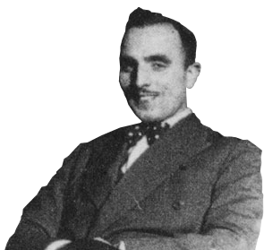

CAMPISTI
Si intendevano sia i fondatori che tutti coloro che hanno partecipato alla realizzazione e produzione di tutti i numeri della Rivista.

Campo Grafico si distaccò dagli stilemi in uso in Italia e si avvicinò alle correnti dell'avanguardia europea, su tutte il Bauhaus tedesco. In un periodo in cui l'arte grafica stava estenuandosi in una elegante staticità neoclassica, Campo Grafico avanzò ardite soluzioni che scavalcavano le prassi ormai ingessate della vecchia tradizione artigianale.
I FONDATORI FURONO IL PITTORE ATTILIO ROSSI E IL GRAFICO CARLO DRADI, ATTIVI ENTRAMBI NEL CARTELLONISMO PUBBLICITARIO.
L'intenzione dei fondatori era applicare alla grafica i temi moderni già recepiti in Italia nell'arte figurativa e nell'architettura.
ATTILIO ROSSI
Pittore e grafico

CARLO DRADI
Grafico e operatore culturale

ATTILIO ROSSI
Pittore e grafico
DATE DI ESISTENZA
Luogo di nascita:
Data di nascita:
Luogo di morte:
Data di morte:
Albairate (Milano)
25 marzo 1909
Milano
6 aprile 1994
Nel 1925 iniziò a lavorare come tipografo e impaginatore all’Istituto grafico Bertieri e Vanzetti di Milano. Nella prima metà degli anni Trenta i suoi riferimenti culturali erano il Bauhaus di Walter Gropius, le teorie di Le Corbusier, Piet Mondrian e Pablo Picasso. Nel 1933 fu tra i fondatori della rivista Campo grafico, concepita come una continuazione ideale del Bauhaus.
CARLO DRADI
Grafico e operatore culturale
DATE DI ESISTENZA
Luogo di nascita:
Data di nascita:
Luogo di morte:
Data di morte:
Milano
1908
Milano
1982
Carlo Dradi, grafico e operatore culturale, è stato particolarmente attivo dai primi anni ’30 a tutti i ’60. Tra i fondatori di «Campo Grafico», la nota rivista di “estetica e tecnica grafica“, e del Centro di Studi Grafici (CSG) ma anche direttore di «Linea Grafica».È stato tra i fondatori di Aiap - Associazione italiana design della comunicazione visiva.